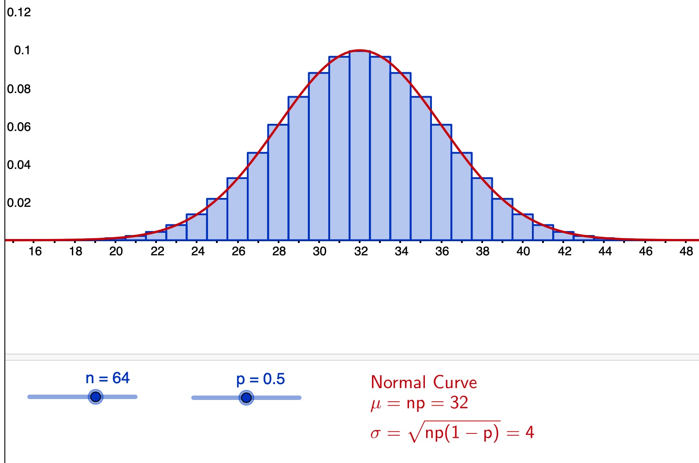

Appelons X la variable aléatoire donnant le nombre de faces apparues en 64 lancers. Si la pièce est parfaite, X suite une loi binomiale de paramètres (n=64,p=1/2). On peut faire l’approximation de cette loi par la loi normale de paramètres (\mu=32,\sigma=4).

La démarche consiste à poser l’hypothèse (classiquement notée H_0) selon laquelle la pièce est effectivement régulière puis déterminer l’intervalle de “nombre de faces” où X a une chance très élevée de tomber par la seule raison des fluctuations (aléatoires) d’échantillonnage.
“Au seuil de 0.01” signifie qu’on souhaite que l’erreur de première espèce (le risque d’accuser à tort la pièce d’être irrégulière) soit de 1%.
On cherche un intervalle centré sur 32 (ça n’est pas écrit dans l’énoncé donc c’est une hypothèse qu’on fait, qui nous permet de formule le problème comme la recherche de l’intervalle [32-t,32+t] tel que p(32-t\leq X \leq 32+t) = 0.99
c.a.d. \quad p(\frac{32-t-32}{4}\leq \frac{X-32}{4} \leq \frac{32+t-32}{4})=0.99 p(\frac{-t}{4}\leq Z \leq \frac{t}{4})=0.99 où Z est une variable qui suit une loi normale centrée réduite.
or p(\frac{-t}{4}\leq Z \leq \frac{t}{4}) = F(\frac{-t}{4}) - F(\frac{-t}{4})
et F(\frac{-t}{4})=1-F(\frac{t}{4}) grâce à la symétrie de la loi normale centrée réduite par rapport à 0
On cherche donc t tel que 2F(\frac{t}{4})-1=0.99 La table donne \frac{t}{4}=2.58 et on déduit que [32-t,32+t]=[21.68, 42.32]
En choisissant d’accepter la pièce comme régulière si le nombre de faces est entre 22 et 42 inclus, on obtient approximativement une erreur de première espèce de 0.01